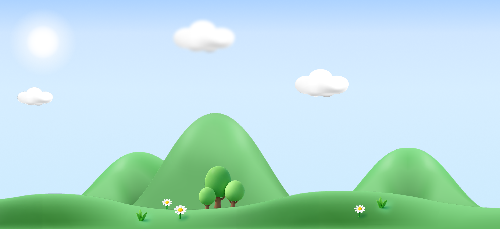
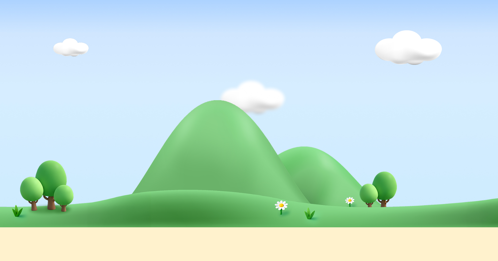
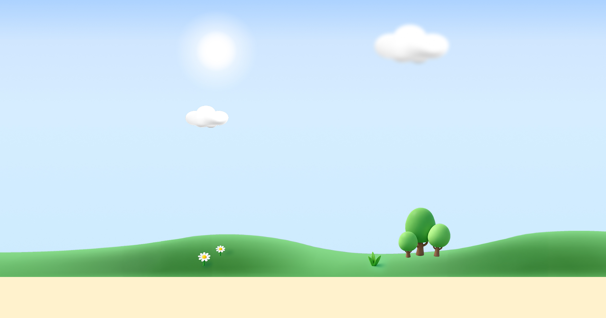
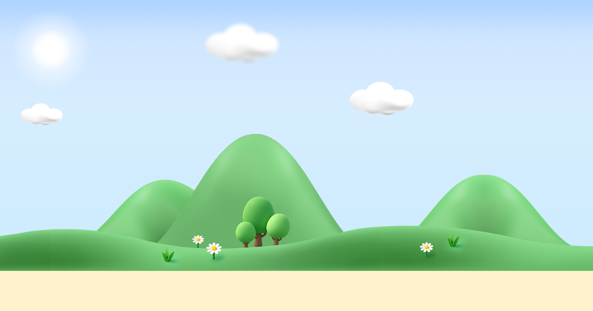

CASE 0 — 안 움직이는 고정형 bg_step1 한 장을 좌우 가운데에 고정하고, 양옆에 남는 자리는 2px 그림(bg_step1_l / bg_step1_r)을 repeat-x 로 이어 채웁니다

자산성장 트래킹 미션자산 성장을 향한
30일 투자 등반
CASE 1 — 그림 1장 무한루프
bg_step1 한 장을 repeat-x 로 이어붙여 4초에 한 바퀴 돕니다
(좌우 끝 언덕선이 달라 한 바퀴에 한 번 이음매가 보입니다)
자산 성장을 향한
30일 투자 등반
CASE 2 — 그림 2장 세트 무한루프
bg_step1 → bg_step2 가 번갈아 지나가고 8초에 한 바퀴 돕니다
(그림 1장당 4초라 CASE 1 과 체감 속도는 같고, 두 그림의 끝이 맞아 이음매가 없습니다)
자산 성장을 향한
30일 투자 등반
CASE 4 — 패럴랙스 (레이어 4장 + 하늘)
구름 60초 · 먼산 48초 · 중간산 24초 · 앞잔디 10초 — 뒤로 갈수록 느리고 흐립니다
(하늘과 해는 제자리에 고정, 구름이 해 앞을 지나갑니다. 레이어 폭이 서로 배수가 아니라 같은 배치가 좀처럼 돌아오지 않습니다)
자산 성장을 향한
30일 투자 등반
좌우 반복 배경 — 4종
그림 한 장을 가운데에 두고 양옆은 끝 세로줄(2px)을 repeat-x 로 끝없이 채웁니다
(넓은 화면에서도 빈 자리가 없고, 좁아지면 채움이 저절로 사라집니다)
자산 성장을 향한
30일 투자 등반

자산성장 트래킹 미션자산 성장을 향한
30일 투자 등반

자산성장 트래킹 미션자산 성장을 향한
30일 투자 등반

자산성장 트래킹 미션자산 성장을 향한
30일 투자 등반
자산성장 트래킹 미션이란?
투자의 시작부터 자산 성장까지!
30일 동안 3개 코스에 도전하고 20,000P 받아요